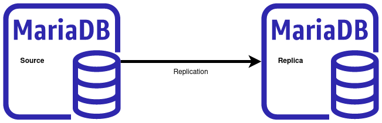

دیتابیس mysql/mariadb توپولوژی های رپلیکیشن مختلفی را معرفی کرده اند، معروف ترین آنها
توپولوژی Master/Slave می باشد که در آن یک سرور به عنوان مستر عمل کرده و دیگری به عنوان اسلیو.
به طور پیش فرض، رپلیکیشن به صوت نامتقارن بوده که با ارسال وقایع مستر به باینری لاگ دیتابیس که
توضیح دهنده تغییرات لحظه ای دیتابیس بوده و اسلیوها این وقایع را زمانی که آماده باشند درخواست
می کنند. نکته مهم این است که در این روش، امکان عملبات write/read فقط روی سرور مستر می باشد و
روی سرور اسلیو فقط امکان read وجود دارد.

یکی دیگر از روشهای راه اندازی رپلیکیشن، master-master است که در دیتابیس mysql/mariadb به وسیله
تکنولوژی Galera cluster قابل پیاده سازی و راه اندازی می باشد. در این روش امکان read وwrite
به صورت همزمان وجود دارد. ما هم راه اندازی این روش رپلیکیشن به
صورت ساده در لینک
نصب Galera Cluster بر روی debian 10
و راه اندازی همین رپلیکیشن بر بستر Docker در لینک
راه اندزای گلرا کلاستر با داکر
توضیح داده شده است.
در این نوشته نحوه راه اندازی یک رپلیکیشن Master/Slave از دیتابیسی که موجود و زیر بار است،
روی Mariadb، طوری که قطعی اتفاق نیفتد را با هم مرور خواهیم کرد.
تنظیمات سرور مستر
روی این سرور سرویسی دیتابیس Mariadb نصب شده است و حاوی دیتابیس به همراه داده ها و اطلاعات
برنامه ها می باشد.
برای آماده سازی سرور اصلی، یک سری تنظیمات باید روی آن اعمال شود.
server-id یک شماره یکتا به مستر تخصیص داده می شود. تمام اسلیوها نیز یک id می گیرند که این عدد بیین ۱ تا ۲۳۲-۱ می باشد و برای هر سرور در گروه رپلیکیشن، این عدد باید یکتا باشد.
bind-address تنظیم کننده و تخصیص دهنده یک آدرس مشخص ip برای سرویس دهی روی آن آدرس می باشد.از localhost
یا 127.0.0.1 استفاده نشود.
log-bin ویژگی ثبت باینری لاگ ها را فعال می کند
در نهایت این تنظیمات در فایل /etc/mysql/my.cnf به صورت زیر می شوند:
[mariadb]
bind-address = 0.0.0.0
server-id = 10
log_bin = mysql-bin
binlog-format = mixed
innodb_flush_log_at_trx_commit = 1
sync_binlog = 1
و در نهایت برای اعمال تنظیمات روی مستر باید سرویس ریست شود:
systemctl restart mariadb.service
ایجاد دسترسی رپلیکیشن
یک حساب کاربری با دسترسی REPLICATION SLAVE باید ایجاد شود:
MariaDB [(none)]> CREATE USER 'slave1'@'%' IDENTIFIED BY 'slave@1234';
Query OK, 0 rows affected (0.001 sec)
MariaDB [(none)]> GRANT REPLICATION SLAVE ON *.* TO 'slave1'@'%';
Query OK, 0 rows affected (0.001 sec)
تنظیم سرور Slave
همان تنظمیاتی که روی مستر ایجاد شده بود، را نیز روی اسلیوها در فایل
/etc/mysql/my.cnf
اعمال می کنیم. فقط باید دقت شود
تا sever-id متفاوتی از مستر داده شود.
[mariadb]
bind-address = 0.0.0.0
server-id = 20
log_bin = mysql-bin
binlog-format = mixed
relay-log = mysql-relay-bin
log-slave-updates = 1
read-only = 1
لازم است تا سرویس ریست شود:
systemctl restart mariadb.service
همسان سازی اسلیو با مستر
زمانی که روی سرور مستر دیتابیسی دارید بزرگ و سنگین، برای انتقال آن به سرور اسلیو جهت همسان سازی
لازم است تا یک dump از دیتابیس گرفته و روی اسلوی بازگردانده شود، سپس تنظیمات رپلیکیشن روی سرور
اسلیو اعمال شد تا mysql/mariadb عملیات رپلیکشن را شروع کند.
برای انجام همسان سازی مراحل زیر را به ترتیب باید انجام شوند.
بکاپ گیری دیتابیس-سرور مستر
ابتدا باید از دیتابیس مورد نظر، بکاپی با گزینه های زیر گرفته شود:
mysqldump --skip-lock-tables --single-transaction --flush-logs --master-data=2 mydb > ~/mysqldump.sql
گزینه skip-lock-tables باعث می شود تا زمان پشتیبان گیری، خللی در عملکرد جداول با لاک کردن آن ها
ایجاد نشود.
گزینه مهم بعدی master-data=2 است که در آن موجب می شود تا اطلاعات مربوط به مستر را نیز در
فایل یکاپ شامل اطلاعات مستر position و مستر فایل می باشد.
gzip -9 ~/mysqldump.sql
rsync -azv ~/mysqldump.sql.gz root@slave-server:
بازگرداندن دیتابیس -اسلیو سرور
برای بازگرداندن پشتیبان روی سرور اسلیو مراحل زیر را باید طی شوند:
gunzip ~/mysqldump.sql.gz
mysql -uroot -p mydb < ~/mysqldump.sql
راه اندازی رپلیکیشن
برای راه اندازی رپلیکیشن ما نیاز به دو داده مهم از سرور مستر داریم: MASTER_LOG_FILE و
MASTER_LOG_POS که این ها در فایل یکاپ درج شده اند. پس:
head dump.sql -n80 | grep "MASTER_LOG_POS"
در نهایت با لاگین به کنسول mysql/mariadb و اعمال تنظیمات نهایی رپلیکیشن راه اندازی خواهد شد:
CHANGE MASTER TO MASTER_HOST='master-ip',MASTER_USER='slave1',MASTER_PASSWORD='slave@1234', MASTER_LOG_FILE='mster-log-file', MASTER_LOG_POS=master-log-pos;
START SLAVE;
در پایان برای اطمینان از صحت رپلیکیشن دستور زیر را اجرا می کنیم:
SHOW SLAVE STATUS \G
با خروجی زیر:
MariaDB [(none)]> SHOW SLAVE STATUS\G
*************************** 1. row ***************************
Slave_IO_State: Waiting for master to send event
Master_Host: master-ip
Master_User: slave1
Master_Port: 3306
Connect_Retry: 60
Master_Log_File: mysql-bin.000002
Read_Master_Log_Pos: 665
Relay_Log_File: relay-bin.000002
Relay_Log_Pos: 555
Relay_Master_Log_File: mysql-bin.000002
Slave_IO_Running: Yes
Slave_SQL_Running: Yes
Replicate_Do_DB:
Replicate_Ignore_DB:
Replicate_Do_Table:
Replicate_Ignore_Table:
Replicate_Wild_Do_Table:
Replicate_Wild_Ignore_Table:
Last_Errno: 0
Last_Error:
Skip_Counter: 0
Exec_Master_Log_Pos: 665
Relay_Log_Space: 875
Until_Condition: None
Until_Log_File:
Until_Log_Pos: 0
Master_SSL_Allowed: No
Master_SSL_CA_File:
Master_SSL_CA_Path:
Master_SSL_Cert:
Master_SSL_Cipher:
Master_SSL_Key:
Seconds_Behind_Master: 0
Master_SSL_Verify_Server_Cert: No
Last_IO_Errno: 0
Last_IO_Error:
Last_SQL_Errno: 0
Last_SQL_Error:
Replicate_Ignore_Server_Ids:
Master_Server_Id: 10
Master_SSL_Crl:
Master_SSL_Crlpath:
Using_Gtid: No
Gtid_IO_Pos:
Replicate_Do_Domain_Ids:
Replicate_Ignore_Domain_Ids:
Parallel_Mode: optimistic
SQL_Delay: 0
SQL_Remaining_Delay: NULL
Slave_SQL_Running_State: Slave has read all relay log; waiting for more updates
Slave_DDL_Groups: 2
Slave_Non_Transactional_Groups: 0
Slave_Transactional_Groups: 0
1 row in set (0.000 sec)
اگر در خروجی فوق این دو پارامتر با مقادیر yesباشندSlave_IO_Running: Yesو
Slave_SQL_Running: Yes رپلیکشین درست است و همچنین مقدار پارامتر Seconds_Behind_Master نشان
دهنده میزان ثانیه ای است که اسلیو از مستر عقب است.